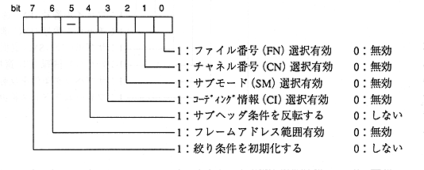

Title | Function | Function Name [SR] | No |
format Sint32 CDC_SetFiltMode (Sint32 filtno, Sint32 fmode) Input filtno: Aperture number : fmode: Aperture mode (lower 8 bits are valid) Output None Function value Returns an error code. End flag ESEL flag Function Set the aperture mode for the aperture.

(2) Inversion of subheader conditions
If you reverse the subheader condition, the output destination will be the opposite of the normal case for the subheader condition. In other words, sectors that match the subheader condition are false output connectors, and sectors that do not match are true output connectors. Is output. (a) Normal time ・ Output to true output connector: FAD range of aperture matches [and] Sub header condition matches ・ Output to fake output connector: FAD range of aperture does not match [or] Sub header condition does not match (b) When reversed ・ Output to true output connector: FAD range of aperture matches [and] Sub header condition does not match ・ Output to fake output connector: FAD range of aperture does not match [or] Subheader condition matches
(3) Initializing aperture conditions
∙ When the aperture condition is initialized, the other bits are ignored and the following initial values are set. Frame address range: Start FAD = 0, FAD sector count = 0 Subheader condition: FN, CN, SMMSK, SMVAL, CIMSK, CIVAL are all 0 ・ Aperture mode: All bits = 0